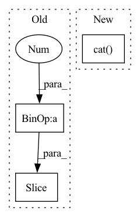

Pattern ID :2584
Before Change
// b[Ellipsis, self.output_size * i],
// quantile)
loss.append(self.quantile_loss(a[Ellipsis, self.output_size * i:self.output_size * (i + 1)],
b[Ellipsis, self.output_size * i :self.output_size * (i + 1 )],
quantile))
loss_computed = torch.cat(loss, axis = -1)After Change
// loss_computed = torch.sum(loss_computed, axis = -1)
// loss_computed = torch.sum(loss_computed, axis = 0)
loss_computed = torch.mean(torch.sum(torch.cat( loss, axis = 1) , axis = -1))
return loss_computed
// return lossIn pattern: SUPERPATTERN
Frequency: 3
Non-data size: 3
Instances Fragment ID: 10695143
Project Name: jdb78/pytorch-forecasting
Commit Name: 3df79817258a8f6172faea257e8a3df2ec1f3737
Time: 2020-03-09
Author: dannyehb92@gmail.com
File Name: quantile_loss.py
M Class Name: QuantileLossCalculator
N Class Name: QuantileLossCalculator
M Method Name: apply(3)
N Method Name: apply(3)
M Parent Class:
N Parent Class:
M File Name: quantile_loss.py
N File Name: quantile_loss.py
M Start Line: 49
M End Line: 66
N Start Line: 60
N End Line: 85
Before Change
decoder_input_ids.shape[1]),
dtype=torch.float).to(self.device)
for t_index in range(self.max_seq_length-1):
perm_mask[:, -t_index, -(self.max_seq_length-1) :-t_index] = 0.0
perm_mask = perm_mask.contiguous()
target_mapping = torch.zeros((input_ids.shape[0], decoder_input_ids.shape[1], decoder_input_ids.shape[1]),
dtype=torch.float).to(self.device)After Change
input_ids.append(encoding_dict.input_ids)
attn_masks.append(encoding_dict["attention_mask"])
input_ids = torch.cat(input_ids, dim=0).to(self.device)
attn_masks = torch.cat( attn_masks, dim=0) .to(self.device)
decoder_target_ids = input_ids[:, 1:].contiguous()
Fragment ID: 10695141
Project Name: rucaibox/textbox
Commit Name: 53c76331ad0c943d52e3310affd25d0e505eb830
Time: 2021-01-19
Author: 1020139164@qq.com
File Name: textbox/model/LM/xlnet.py
M Class Name: XLNet
N Class Name: XLNet
M Method Name: calculate_loss(4)
N Method Name: calculate_loss(3)
M Parent Class: UnconditionalGenerator
N Parent Class: UnconditionalGenerator
M File Name: textbox/model/LM/xlnet.py
N File Name: textbox/model/LM/xlnet.py
M Start Line: 90
M End Line: 113
N Start Line: 72
N End Line: 111
Before Change
cls_tokens = repeat(self.cls_token, "() n d -> b n d", b=b)
x = torch.cat((cls_tokens, x), dim=1)
x += self.pos_embedding[:, : (n + 1 )]
x = self.dropout(x)
x = self.attn_layers(x, **kwargs)After Change
x = torch.cat((cls_tokens, x), dim=1)
h, w = torch.tensor(img.shape[2:])//p
pos_emb_ind = repeat(torch.arange(h)*(self.max_width//p-w), "n -> (n b)", b=w)+torch.arange(h*w)
pos_emb_ind = torch.cat( (torch.zeros(1), pos_emb_ind+1), dim=0) .long()
x += self.pos_embedding[:, pos_emb_ind]
x = self.dropout(x)
Fragment ID: 10695144
Project Name: lukas-blecher/latex-ocr
Commit Name: 5d15dcb665d370fb77e6ae5589edb91c403ac0bb
Time: 2021-01-28
Author: luk.blecher@gmx.de
File Name: models.py
M Class Name: ViTransformerWrapper
N Class Name: ViTransformerWrapper
M Method Name: forward(2)
N Method Name: forward(2)
M Parent Class: nn.Module
N Parent Class: nn.Module
M File Name: models.py
N File Name: models.py
M Start Line: 49
M End Line: 49
N Start Line: 44
N End Line: 55